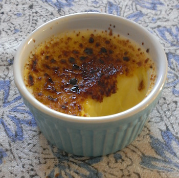
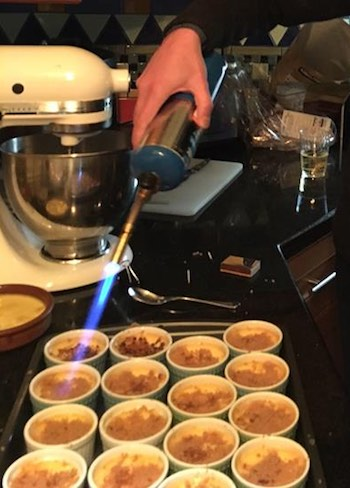

Crème brûlée recipe

Prep Time: 25 minutes - Cook Time: 1+ hour - Servings: 6
Ingredients for 6 large or 10 small crèmes brûlées:
- 45 cl heavy whip cream (or half-and-half for the lighter version)
- 6 egg yolks
- 15 cl of Milk (or almond milk)
- 1 pinch of salt
- 150 g of white granulated Sugar
- Brown Sugar
- Vanilla extract
- A few raspberry, or lemon zest, or banana pieces, or pineapple pieces (optional)
- Rum or liquor (optional)
Tools:
- Large mixing bowl
- Whip
- Ramequins
- Torch or branding iron
Instructions:
- pre-heat the oven to 250°F
- beat the egg yolks (no use for the whites)
- add the sugar and a pinch of salt
- add the cream, the milk and the vanilla
- pour in ramekins
- (optionally) add fruit in some ramekins
- fill a long baking dish 1/3 w/ water and put the ramekins in it (the water should not go in the ramekins)
- bake for about 1 hour depending on your oven (they are cooked when shaking the dish the cream is firm but not hard)
- let cool down and put in the fridge for a few hours (they will become harder when cold)

Instructions for burning the caramel crust (just before serving):
Using a torch (I personaly use a Bernzomatic):
- put some brown sugar on the cold Crème brûlée.
- put the flame on the brown sugar (not too close) and it will melt into caramel
Using a crème brûlée branding iron (the old-fashion way):
- put some brown sugar on the cold Crème brûlée.
- heat the branding iron by putting it directly on the burner until it's hot (but not turning red)
- put the iron on the brown sugar and it will turn into caramel
- if the branding iron is hot enough it can be used for 2 cremes in a row otherwise put it back on the burner before the next one
Notes:
- Great w/ Sauterne wine.
- Replace heavy whip cream by half-and-half for a lighter version.